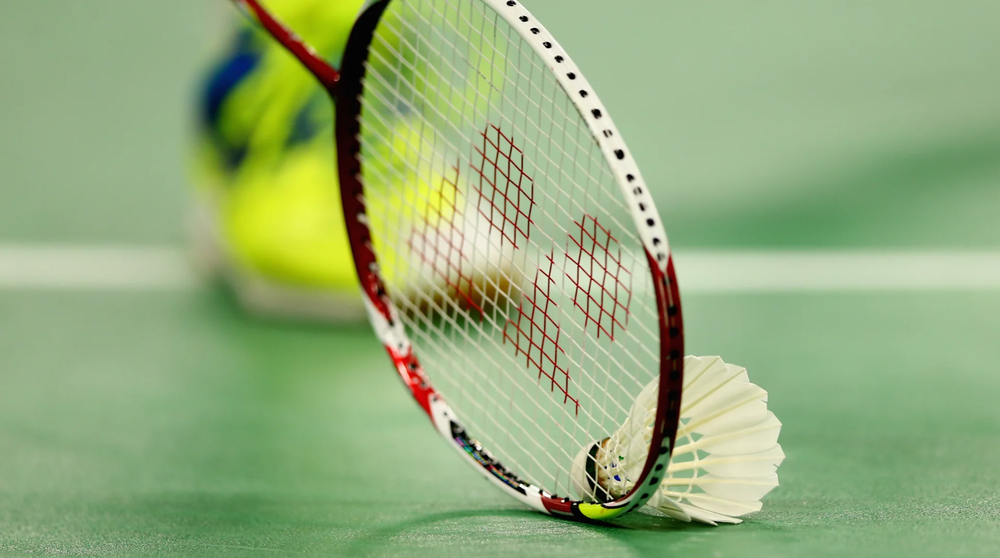
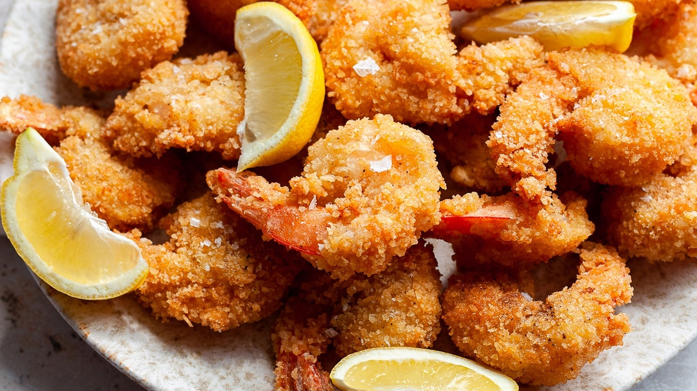

I like a lot of things such as sports, videogames and cats.
 I played Elden Ring in 2022 and it was a very good game. I used to play volleyball in middle school and started playing badminton in high school. I got an orange cat in April this year and he is crazy. I've always liked fried shrimp since the first time I had it.